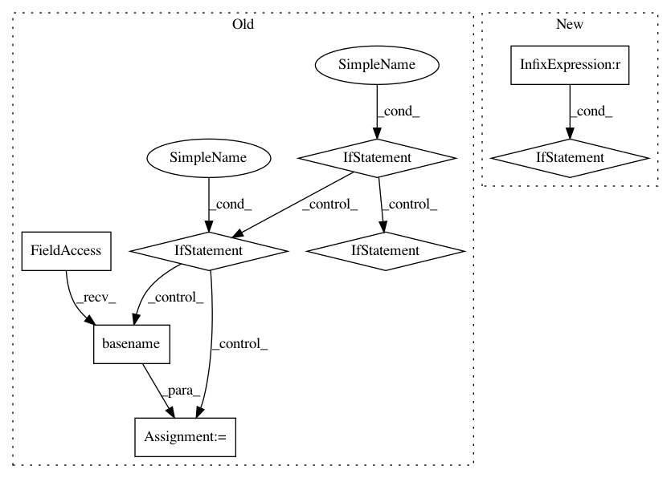

5f54d410357d3df37d48bf121b5f4d60c58928f3,src/python/pants/backend/project_info/tasks/ide_gen.py,IdeGen,map_external_jars,#IdeGen#,306
Before Change
jar_paths = self.get_jar_infos(self.context.products.get_data("ivy_jar_products"), confs)
for entry in jar_paths.values():
jar = entry.get("default")
if jar:
cp_jar = os.path.join(external_jar_dir, os.path.basename(jar))
shutil.copy(jar, cp_jar)
cp_source_jar = None
source_jar = entry.get("sources")
if source_jar:
cp_source_jar = os.path.join(external_source_jar_dir, os.path.basename(source_jar))
shutil.copy(source_jar, cp_source_jar)
cp_javadoc_jar = None
javadoc_jar = entry.get("javadoc")
if javadoc_jar:
cp_javadoc_jar = os.path.join(external_javadoc_jar_dir, os.path.basename(javadoc_jar))
shutil.copy(javadoc_jar, cp_javadoc_jar)
self._project.external_jars.add(ClasspathEntry(cp_jar,
source_jar=cp_source_jar,
javadoc_jar=cp_javadoc_jar))
def execute(self):
Stages IDE project artifacts to a project directory and generates IDE configuration files.
self._prepare_project()
After Change
cp_source_jar = cp_source_jars[i]
else:
cp_source_jar = None
if i < len(cp_javadoc_jars):
cp_javadoc_jar = cp_javadoc_jars[i]
else:
cp_javadoc_jar = None
self._project.external_jars.add(ClasspathEntry(cp_jar,
source_jar=cp_source_jar,
javadoc_jar=cp_javadoc_jar))
In pattern: SUPERPATTERN
Frequency: 3
Non-data size: 8
Instances
Project Name: pantsbuild/pants
Commit Name: 5f54d410357d3df37d48bf121b5f4d60c58928f3
Time: 2015-05-11
Author: zundel@squareup.com
File Name: src/python/pants/backend/project_info/tasks/ide_gen.py
Class Name: IdeGen
Method Name: map_external_jars
Project Name: pyinstaller/pyinstaller
Commit Name: 09a68eb00215859005835514a5d04b01f936ed1d
Time: 2020-10-18
Author: h.goebel@crazy-compilers.com
File Name: PyInstaller/depend/analysis.py
Class Name: PyiModuleGraph
Method Name: _make_toc
Project Name: dPys/PyNets
Commit Name: 3108bf444028e7ab929f78da794f680aa84c2782
Time: 2019-06-28
Author: dpisner@utexas.edu
File Name: pynets/utils.py
Class Name:
Method Name: save_nifti_parcels_map